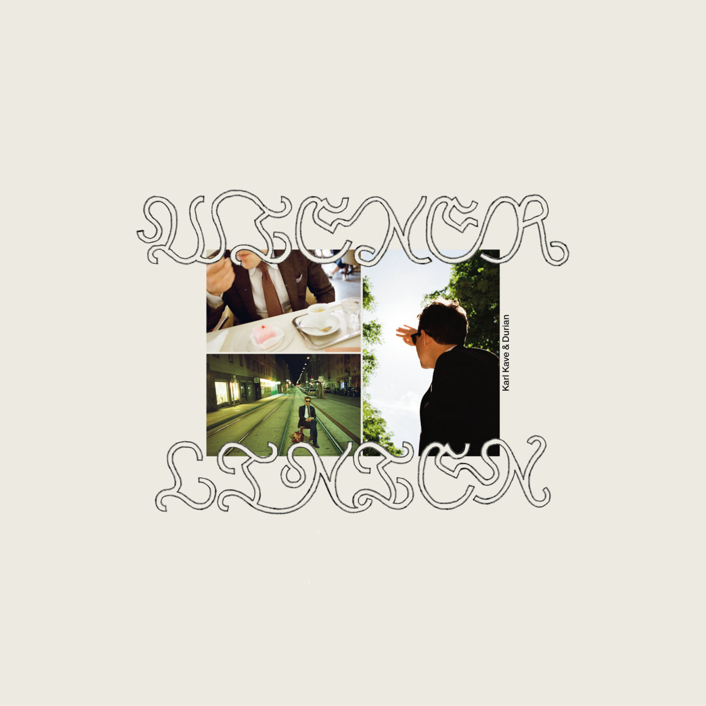
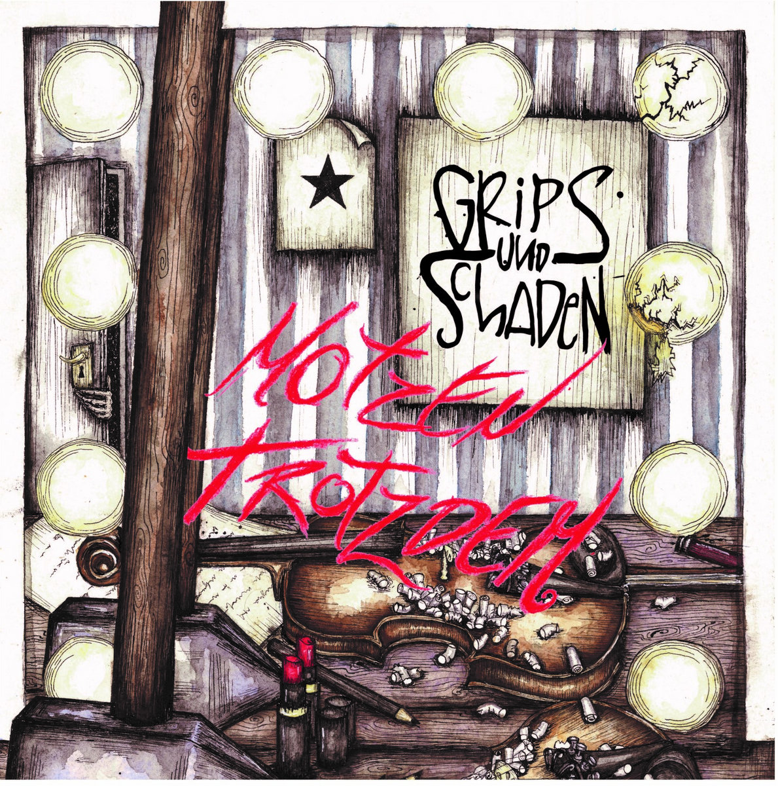
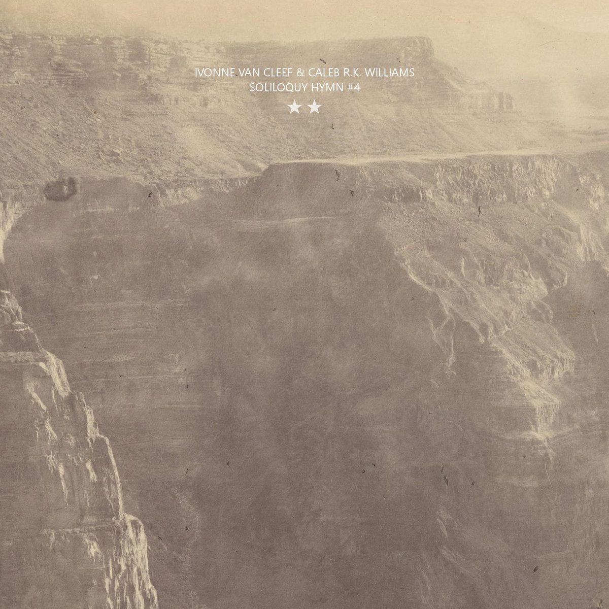

Bandcamp Friday is March 5th, 2026. I always like to use these opportunities to both find/support Creative Commons music and thought I'd start sharing some of my picks.
I've been doing a lot of work recently on my Creative Commons crawler for Bandcamp - I recently backfilled to remove links that result in 404s and I completely rewrote the crawler. Things seem to be going good although the crawler seems to really like Harsh Noise Wall which I'm not really into.
If you're interested in CC music, be sure to checkout the tool I made for finding CC music on BC: cc-bc.

Close, talk-singing vocals over rhythmic beats and vintage sounding synth pads, Wiener Linien is post-punk / new wave group hailing from Switzerland. Wiender Linien is polished and dreamy, but I would also recommend checking out their album La Vida Loca / Gurkensalat (also BY-NC-SA) which is much more raw - reminding me of Suicide and Escape-ism.

One of the things I love about crawling Creative Commons albums is finding the Anarchist punk groups from around the world. In this case it's more Anarchist...folk polka? Motzen Trotzdem by Germany's Grips und Schaden makes me think of malty beers in steins and singing along with the band at the bar - fun, loud, rowdy.

This one's a weird one - how about some LoFi, ambient, improvisational, western music. Well Ivonne Van Cleef has plenty to choose from. In a collaboration with Caleb R.K. Williams, Soliloquy Hymn #4 sounds like something an archivist might find while digging through old reel-to-reel soundtrack recordings found in some dusty Hollywood closet.
Huh, just realized all the picks have either "und" or "&" in the artist name...
Some honorable mentions: